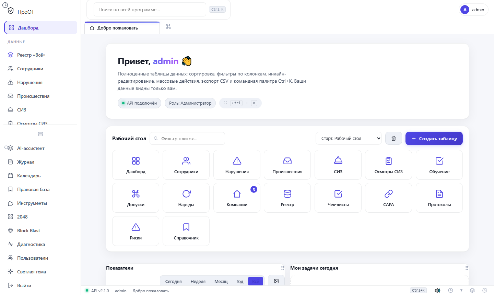
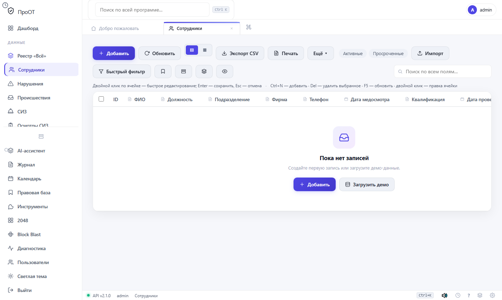
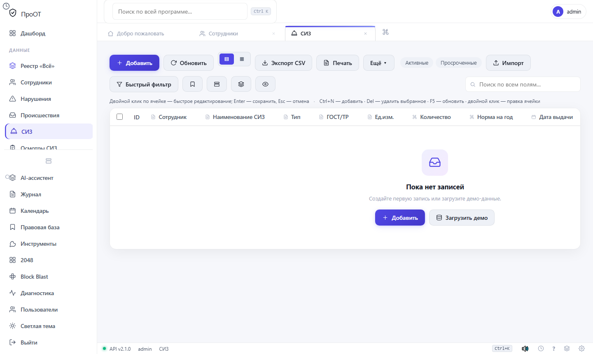
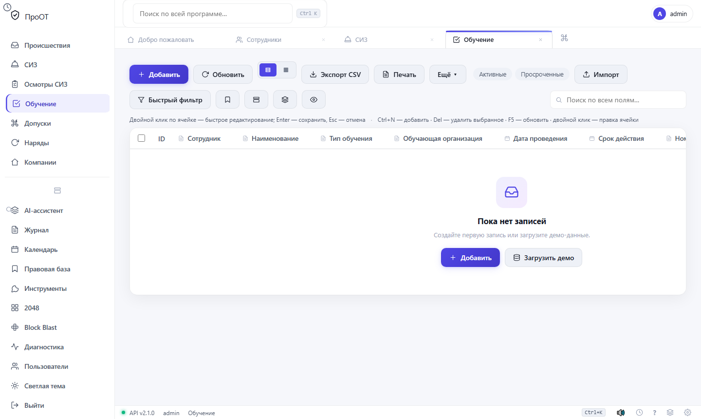
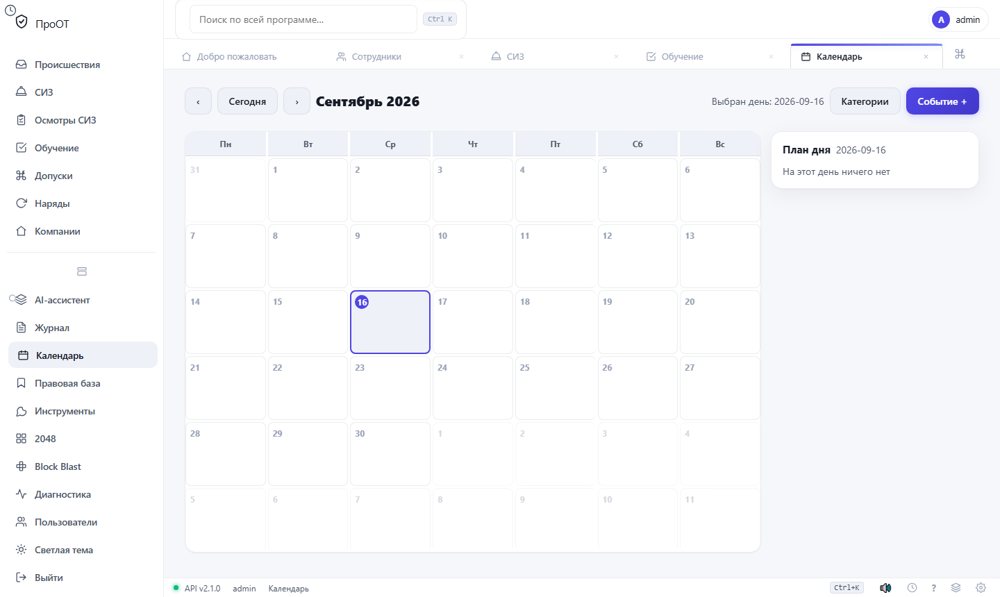
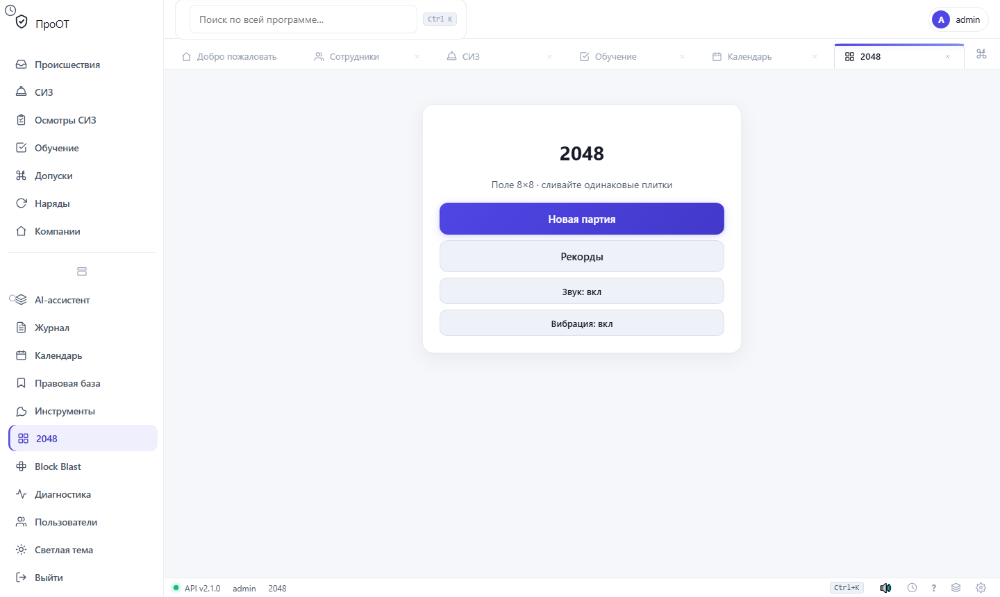

Вся охрана труда —
в одном окне
Современная веб-система управления охраной труда: сотрудники, СИЗ, обучение, наряды-допуски, риски, инциденты, отчёты и печать. Работает как настольное приложение без интернета.
Всё, что нужно специалисту по охране труда
Сотрудники и компании
Карточки с фото, подразделения, контакты, связи между записями и история изменений.
СИЗ и осмотры
Учёт средств защиты, сроки годности, осмотры, просрочка и автоматические напоминания.
Обучение и допуски
Программы, даты аттестации, наряды-допуски и протоколы — всё в единой базе.
Риски и инциденты
Оценка рисков P×C, происшествия, нарушения, CAPA-цепочки и контроль выполнения мер.
Дашборд и аналитика
KPI в реальном времени, лента активности, «Мои задачи сегодня» и конструктор отчётов.
Календарь и напоминания
События, дни рождения сотрудников, еженедельные планы и уведомления со звуком.
Печать и PDF
Конструктор документов с переменными {…}, пакетная печать, водяные знаки и экспорт в файлы.
AI-ассистент
Встроенный чат-ассистент, инсайты по данным и агент действий (Ollama или OpenAI-сервер).
15 рабочих модулей
Безопасность и данные
Инструменты и удобства
Палитра команд — как в программе
Нажмите Ctrl+K — откроется командная палитра. Попробуйте найти раздел через неё.
Интерфейс в тёмной теме






Скачать и установить
Portable ZIP
Распаковал — и работает, без установки. Данные хранятся рядом с программой.
хэш SHA-256 загружается…
Скачать ZIP · 39 МБУстановщик
Мастер установки Inno Setup: ярлыки, запуск после установки, удаление через «Программы и компоненты».
Мастер установки Inno Setup: ярлыки, запуск после установки, удаление через «Программы и компоненты».
Системные требования
- Windows 10 / 11 (64-bit), 4 ГБ ОЗУ
- 300 МБ на диске · архитектура x64
- Интернет не нужен — всё локально
- Браузер-обёртка Chromium (в сборке)
Пошаговая установка
- Скачайте ZIP или установщик выше
- Распакуйте ZIP (или запустите setup.exe)
- Запустите SUOT_Neo.exe (или «ЗАПУСК.bat»)
- Первый пользователь становится администратором
Данные и безопасность
- Пароли защищены PBKDF2
- Изоляция записей и журнал аудита
- Автосейв и резервные копии
- Бесплатно для внутреннего использования
История версий
| Версия | Дата | Файл | Размер |
|---|---|---|---|
| Загрузка истории… | |||
Краткий гайд
🚀 Первый запуск
Мастер раскажет три шага: организация, администратор, настройки. Всё заполняется за минуту, а потом — сразу в работу.
👥 Сотрудники
Заполните карточки, привяжите СИЗ и программы обучения. Импортируйте списки из Excel — мастер подскажет соответствие колонок.
🛡️ СИЗ и осмотры
Программа сама подсветит просрочку и напомнит об осмотрах и датах аттестации — через календарь, уведомления и бейдж на значке.
📑 Отчёты и печать
Конструктор с переменными {…} готовит акты и приказы. Пакетная печать и экспорт в файлы — для бухгалтерии и проверяющих.
🎲 Игры и палитра
Ctrl+K открывает командную палитру — как в IDE. А в свободную минуту на дашборде ждут 2048 и Block Blast.
🔄 Перенос данных
Базы и бэкапы лежат рядом с exe. Перенос — копирование папки. Изоляция и журнал аудита включены по умолчанию.
Подробнее — в руководстве по запуску.
Поддержка
Нужна помощь?
Соберите журнал из меню «Настройки → Диагностика» — это сэкономит часы на переписке.
Нашли ошибку?
Опишите шаги, приложите скриншот и журнал. Сообщите версию (кнопка «О программе»).
Запросы вендору
Для организаций: доработка форм, печатных документов и интеграций — по договору сопровождения.